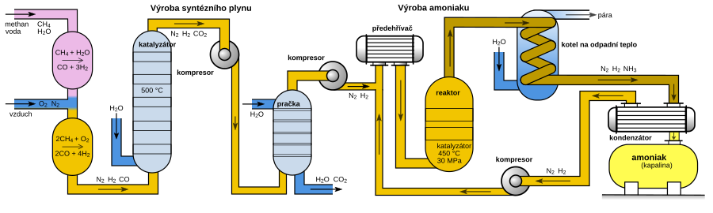

SSCC Pilot — NH₃ & CCU
Decentralized production of green ammonia with integrated carbon capture. Pilot unit 2 kW → 1.5 kg NH₃/day, efficiency > 80 %.
Objectives
Develop a scalable module for local energy systems, combining green ammonia production and CO₂ utilization. Modular, decentralized, EU-ready.
Datasheet
We are preparing a concise PDF datasheet. For now, a temporary test link: